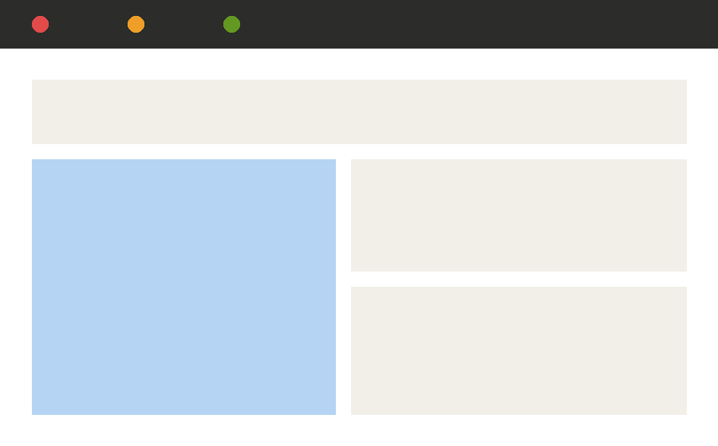

RootAPI

RootAPI is a managed API gateway with built-in observability, acquired via a 2011 acqui-hire and rebuilt twice since. It handles authentication, rate limiting, and request tracing for internal and partner-facing APIs.
API gatewaySince 2011